Letter in Paintings
 |
|

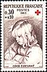
In the world of today, the art of writing and reading letters has lost the importance it had in the past. In industrialized countries it is more and more replaced by e-mail, a practical, but a less romantic way of sending messages around the world with the speed of light. Fortunately, talented artists from the past left us nice paintings about something that was once an important activity and sometimes an art - the letter writing.
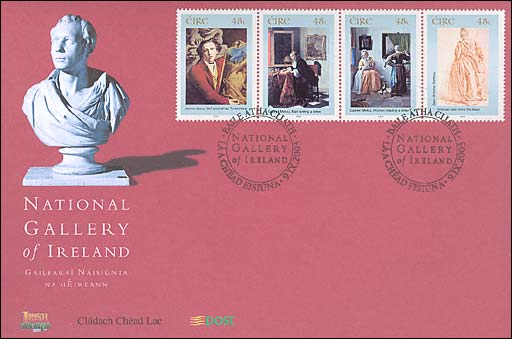
This page was inspired by the new issue of the Ireland Postal Administration, dedicated to paintings from the Irish National Gallery Collection. The whole set of four paintings is shown above, on the FDC issued by this occasion. Two of stamps (shown below as issued in a booklet) reproduce paintings by the Dutch artist Gabriel Metsu, born 1629 in Leiden, dead 1667 in Amsterdam.
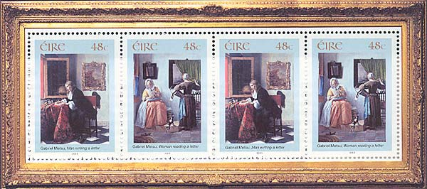
He was active in his native Leiden, then in Amsterdam, where he had moved by 1657. Metsu's early works are typically historical and mythological scenes, broadly rather than minutely painted. Metsu also painted portraits and still-life, but his most characteristic works are genre scenes, some of which rank among the finest of their period.
|
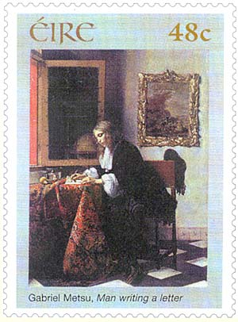 |
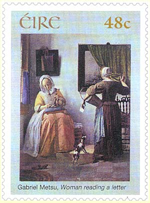 |
He concentrated on scenes of genteel middle-class life, fairly close to de Hooch and Terborch in style, but with a personal stamp. Some of his works are often compared with Vermeer's. His work is rarely dated, so his development and relationships with other artists are actually quite difficult to trace. (After: http://www.kfki.hu/~arthp/bio/m/metsu/biograph.html)
The paintings above on the left, on the stamp, and also below ,are labeled: Man Writing a Letter, that above on the right: Woman Reading a Letter. The paintings in question were companion pieces which suggest a romantic affair between the two subjects.
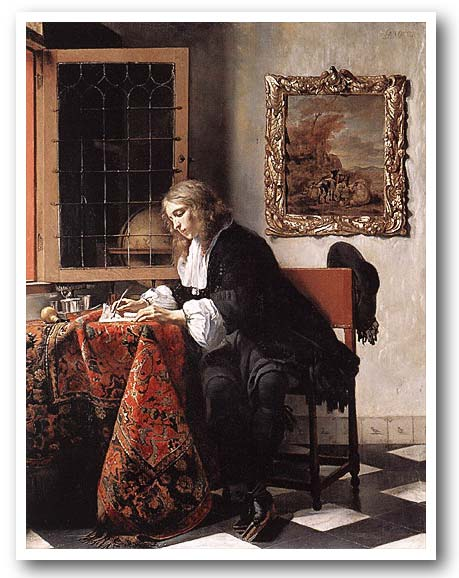
In both paintings, the way the silvery daylight flows over the figures set against light walls is surpassed only by Vermeer. The pendants offer a small drama: the handsome man writes a letter, and its patient recipient attentively reads it by the light of a window. Here letter writing and reading are most likely associated with love.
The Man Writing a Letter offers a view of the love of comfort and beautiful materials in the home of a well-to-do burgher about 1660, and the heavily carved gilt Baroque frame around the landscape painting on the wall behind the handsome young man makes clear that not all seventeenth-century Dutch pictures were enclosed in rectilinear black ebony moldings.
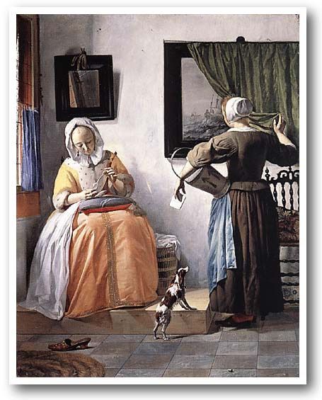
The discreet waiting maid pulls aside a curtain hanging from a rod to reveal a choppy seascape, possibly a reference to the popular adage that love is as hazardous as a sea voyage. The maid's momentary movement contrasts with the concentration of the young woman who, one senses, will not move until she has finished reading the letter.
The curtain over the painting is not an unusual detail. The Dutch often protected paintings with curtains, either to keep off the light and dust, or to look at them only occasionally - a practice that comes from the fine feeling that a work of art cannot be looked at continually. (After: http://www.kfki.hu/~arthp/html/m/metsu/index.html)
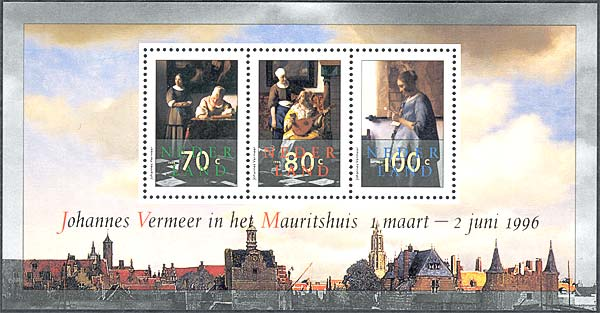
Of only 35 known paintings of the great Dutch painter Jan Vermeer, three are dedicated to letter reading and writing. They appeared together on a souvenir sheet issued by Netherlands in 1996 (see above the sheet and below the set of three stamps).
|
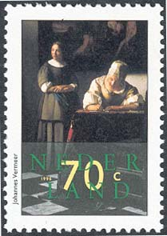 |
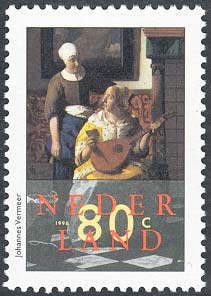 |
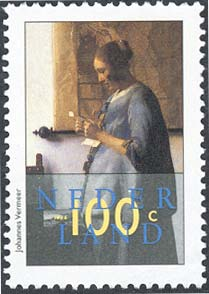 |
For a better view we show them bigger than in reality, so you can better compare then with the related Metsu's works.
We are glad that we can show on this page stamps issued by countries that are are closely related to the displayed works of art. In the case of Irish stamps it is the gallery that exhibits them, and in the case of the Dutch ones as much the origin of the artist as the exhibition place are fully relevant.
Links:
Vermeer, The Master of Light (the first Web page dedicated to Vermeer's art on stamps)
Letter Writing, on art stamps
Ireland Art Gallery, Part 1